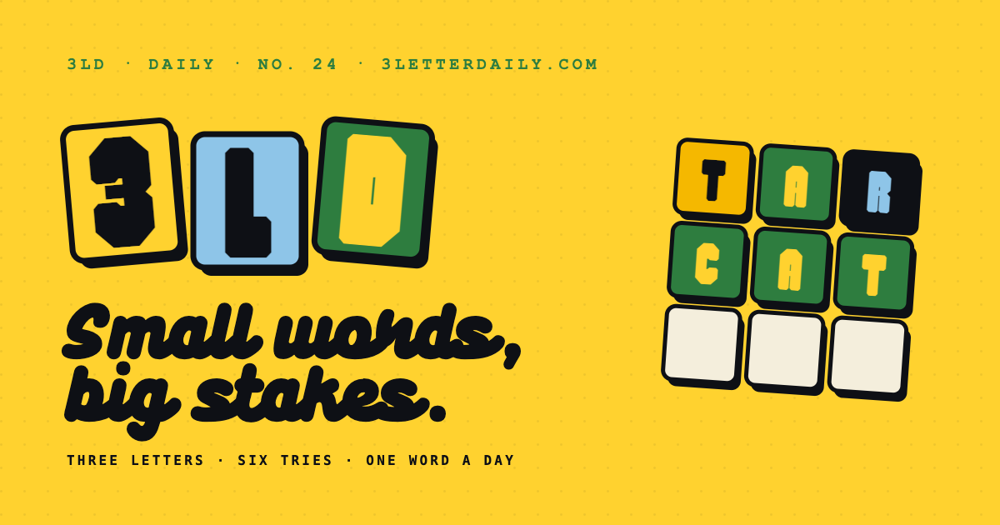
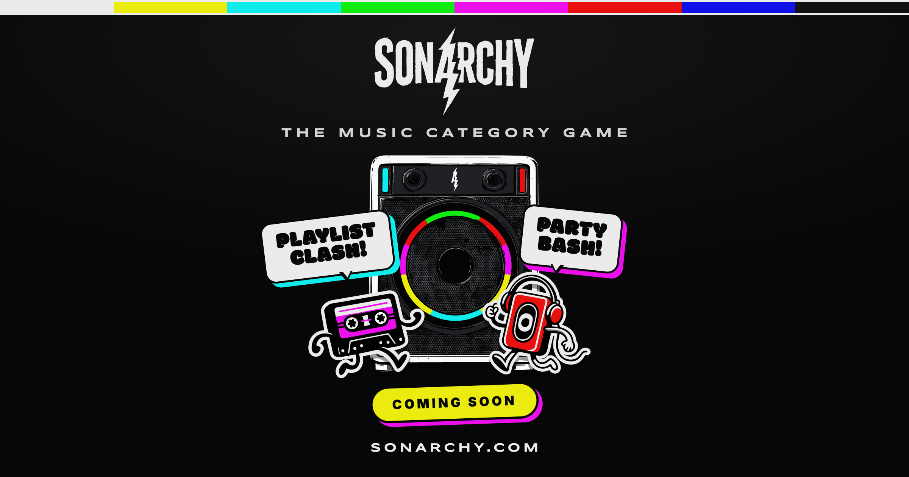

333 Games is an independent studio that exists for one reason: to keep my hands on the tools. It's where I build AI-made games and apps end to end, and test the newest AI workflows and stacks. The games are real and shipped. They're also the excuse.
Studio
333 Games · Treble Games Ltd
Founded
2026
Type
Independent studio · AI-built games & apps
Role
Founder · Designer · Developer
Games & AppsAI built
// 333 Games, Treble Games LtdEst. 2026
01, Why
I design for a living. I rarely get to build.
By day I'm a Principal Product Designer, good work, enormous surface, but a fixed shape: I own a slice of a large product, the cycles are long, and the newest tooling sits with other teams. I influence what gets built more than I build it.
333 Games is the inverse, one person owning the whole pipeline: idea, design, code, ship. The constraint that makes it work is the same one that makes it interesting: there's no one else to hand the hard part to.
The premise
If the newest AI tools really collapse the distance between designing a thing and shipping it, the fastest way to find out is to ship things.
02, Operating model
One person, an AI-paired pipeline, real products at the end
The studio runs on an AI-paired workflow, but not one undifferentiated "ask the AI" blob. Each surface does a distinct job:
01 · PLAN
The thinking partner
Claude.ai for data models, auth strategy, scoping, and the specs that decide what gets built before anything does.
02 · BUILD
The build engine
Claude Code in the terminal, writing and editing the codebase directly, running migrations, wiring the backend in long single sessions.
03 · DESIGN
The canvas
Claude Design for interface ideas tried and thrown away before they cost anything in code.
04 · MEMORY
The project's memory
Handover documents carry context between days and double as a reusable playbook across projects.
The other half is discipline borrowed from real product work: spec before code, migrations verified before they ship, and a standing rule, products, not prototypes.
The bet
The bottleneck for a solo builder stops being capacity and becomes taste. AI handles the volume; the job left is deciding what's worth making and what to cut.
03, The work
Two products. Both real. Both shipped solo.
The studio is judged on what comes out of it, not what it intends. Two products carry the thesis so far.

PRODUCT 01Live
3 Letter Daily
A daily three-letter word puzzle, designed, built and shipped solo over a single weekend. Live at 3letterdaily.com, soft-launched to friends and family.
Server-side evaluation, anonymous-first auth, a curated word pipeline, a small game that exercised a full production stack and proved the weekend-to-live loop was real.
PRODUCT 02 · FLAGSHIPv2 in build
Sonarchy
A multiplayer music party game for the room: one phone plays through a speaker, everyone else picks and rates from their own. v1 is live; v2 is rebuilt spec-first, three weeks of zero code before the build, a direct correction to v1's discovery-debt.
It's where the studio tests realtime multiplayer, the YouTube API, mobile-native wrapping and a design system from scratch. The customer is me and people like me, mid-forties hosts of small get-togethers. Not a venture-scale market, and that's deliberate.

2
Products shipped under the studio
1
Person, design, build and ship
100%
Solo-built, end to end
04, What it returns
The product is the capability
The games pay for themselves at best. The real return is the stack and the workflow I now have hands on.
The technical stack
A modern full-stack pipeline, Next.js, TypeScript, Supabase realtime and Postgres, server-side evaluation and auth owned end to end, third-party integration, mobile-native wrapping, and an AI-paired build process I can run at speed.
The product muscle
The less visible side: scoping a thing down to what ships, killing features that don't earn their place, holding a spec before writing code.
That loops back into the design work, a designer who has shipped the whole pipeline argues differently about what's feasible, what's cheap and what's worth the fight, because the ground under the opinion is real.
05, Principles
The rules it runs on
01
Ship real, not prototypes
If it can't go live, it doesn't count.
02
Spec before code
Three weeks of no code on Sonarchy v2 is a feature.
03
Honest scale
A modest, well-understood audience beats an imaginary large one.
04
Slow burn by design
Funded by the day job, on no investor's clock, that pace is the point.
06, Reflection
The output that matters isn't the games
333 Games started as a place to build what work doesn't let me build. It's become the thing that keeps my design practice honest, a standing reason to stay current with the tools instead of reading about them.
Sonarchy v2 is the next real test: the first product specced under the studio's own discipline rather than discovered mid-build. Whether it finds an audience beyond my living room is open. Whether the studio is doing its job, keeping me building with current tools, on stacks I'd otherwise never touch, is already answered.